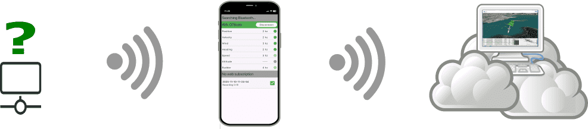
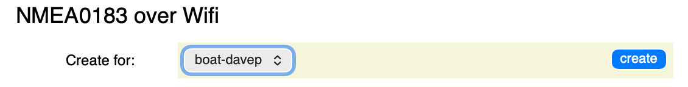
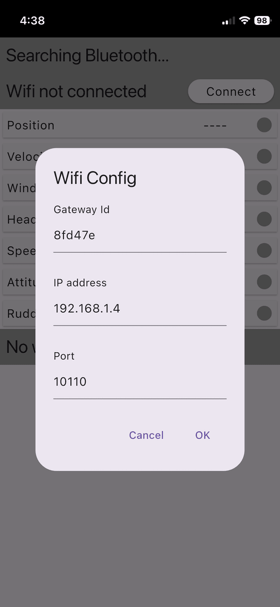
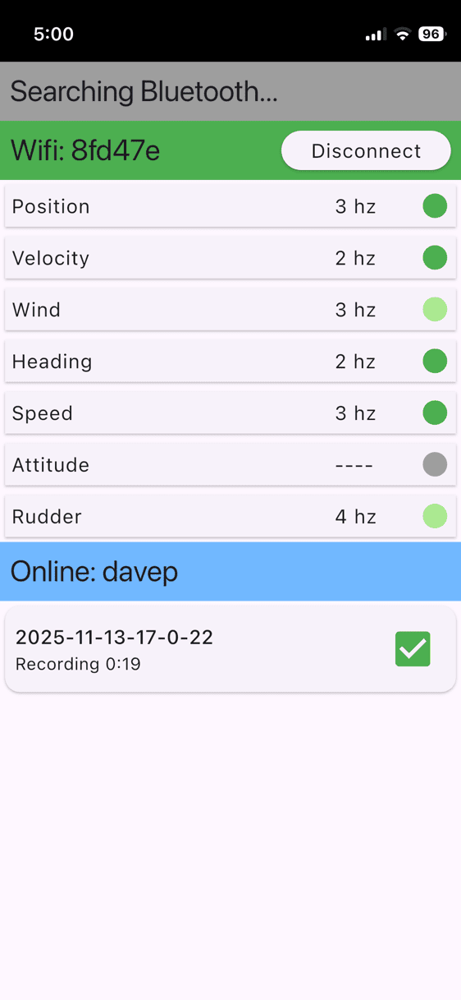

Connecting over WiFi is much the same as Bluetooth except there are a few additional steps. You'll have to obtain a third party gateway which will either create a WiFi access point itself, or will need to be connected to one. The good news is that there are many vendors of these devices, and many of them are cheap. By boat standards.
The eventual "pattern" is the same as for Bluetooth: Data streams onto your phone and is uploaded to the cloud when you're ready. We're unable to record attitude data since it is not supported in NMEA 0183; and the (time) resolution of the uploaded data will be lower, although you will still get good results.
The gateway itself should support being allocated a static IP although a well designed local DNS should work as well. Your phone will need to be connected to the same WiFi access point (or be otherwise routable). See Sailing only supports NMEA 0183 over TCP connections, and neither UDP nor NMEA 2000.
To connect your phone to your account we need to register your WiFi gateway in See Sailing itself. A virtual gateway, if you will. To start the process, scroll to the bottom of your user page to see a section called "NMEA0183 over WiFi". Use this form to create a gateway ID and associate it with your boat ... like this:
This will create a new gateway, visible under "Gateways" on your user page.
You'll be able to click on the link, just as with the Bluetooth gateways:
WiFi uses the same mobile app as Bluetooth.
To configure WiFi: first connect to the correct WiFi access point; start the See Sailing app; and where it says "WiFi not connected", press the "connect" button. You should see a screen like this:
Under "Gateway Id" enter the id value created above. The other two are the IP and port numbers specific to your configuration. Click OK and if all is well you should see something like this:
Note that the "lights" showing channel data arriving are now green instead of blue. Aside from that, the app now behaves exactly as it does for Bluetooth.